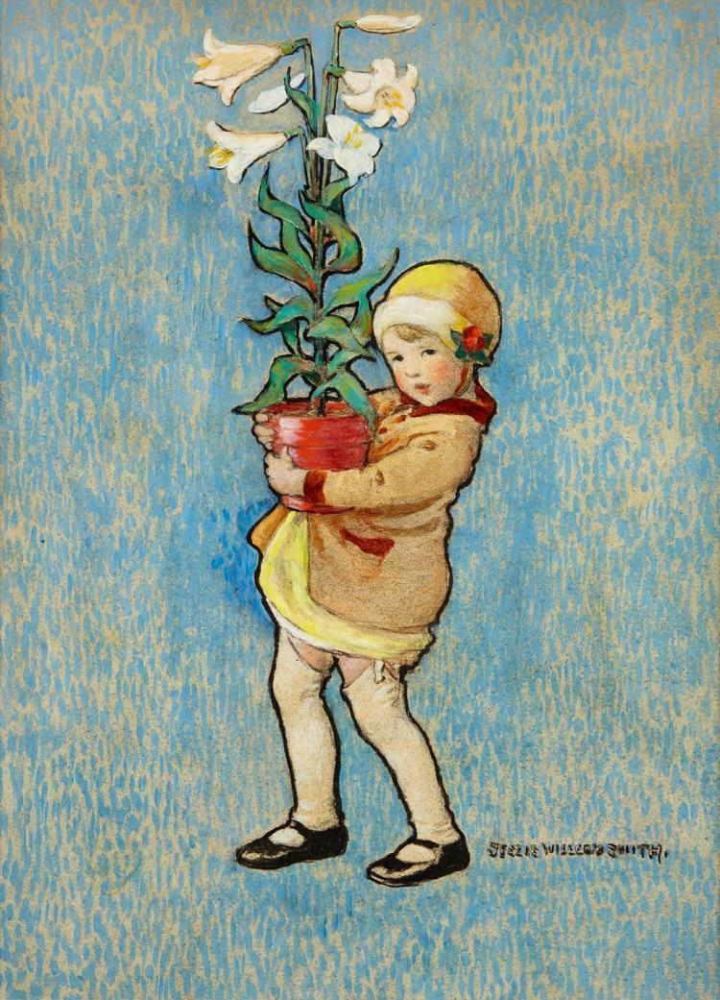
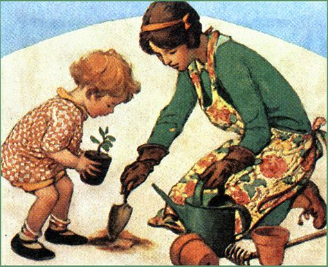

Spring clean your home during the Lent period to get your home and family ready for Easter
Celebrate St. Patrick's Day by hosting a family dance with Irish music and food
Have a meal on St. Patrick's Day with green food, corned beef and cabbage, and Irish soda bread
Watch Darby O'Gill and the Little People on St. Patrick's Day
Make kites and go fly them
Buy bunches of daffodils and give them to family members, neighbors, and friends
Have a picnic on the first day of spring and fly kites and/or play outdoor games like hopscotch, four square, jump rope, etc.
Enjoy the warmer spring weather with homemade outdoor toys. Make paper airplanes, parachutes, pinwheels, slingshots, and bubble wands with bubble solution.
Books About St. Patrick's Day and Spring for Parents
The Confessions of St. Patrick by John Skinner
How the Irish Saved Civilization by Thomas Cahill
When the Irish Invaded Canada by Christopher Klein
The March chapter of The Lifegiving Home by Sally Clarkson

April
Get the Christian Read-Aloud Family Calender!
Click button below to buy.
Picture Books to Read Aloud: Stories About Easter, Trees, and Arbor Day
Zoe Discovers Passover at Easter: Easter for Kids Book. Understanding Passover for Kids by Rene Annette Wallace
In the Garden by Caralyn Buehner
The Bird's Gift retold by Eric Kimmel
Petook: an Easter Story by Carryll Houselander
The Country Bunny and the Golden Shoes by DuBose Heyward
The Parables of Jesus by Tomie de Paola
Little Bunny's Easter Surprise by Jeanne Modesitt
My First Story of the First Easter retold by Deanna Draper Buck
Ready for Easter: a Rosie Rabbit Book by Harriet Ziefert
The Jesus Garden: an Easter Legend by Antoinette Bosco
Easter in the Garden by Pamela Kennedy
The Egg Tree by Katherine Milhous
Benjamin's Box by Melody Carlson
God Gave Us Easter by Lisa Tawn Bergren
The Resurrection is For Me by Jessica B. Ellingson
Bare Tree and Little Wind A Story for Holy Week by Mitali Perkins
Story of a Tree by Dianne Barrett
A Tree is Nice by Janice May Udry
The Big Tree by Bruce Hiscock
The Oak Inside an Acorn by Max Lucado
Seed School Growing Up is Amazing by Joan Holub
The Bee Tree by Patricia Polacco
The Lorax by Dr. Seuss
I Can Name 50 Trees Today by Bonnie Worth
Arbor Day Square by Kathryn O. Galbraith
It's Arbor Day Charlie Brown! by Charles Schulz
Chapter Books to Read Aloud: Stories About Easter
Amon's Adventure: A Story for Easter by Arnold Ytreeide
Amon's Secret by Arnold Ytreeide
The Jesus Storybook Bible by Sally Lloyd-Jones
Journey to the Cross by Helen Haidle
The Lion, the Witch, and the Wardrobe by C.S. Lewis
The Action Bible by David C. Cook
Thoughts to Make Your Heart Sing by Sally Lloyd-Jones
The Green Ember by S.D. Smith
The Story of God's Love for You by Sally Lloyd-Jones
Star of Light by Patricia St. John
Activities About Easter and Arbor Day
Countdown to Easter with spring cleaning and dejunking of your home. Tell neighbors and friends you are collecting gently-used clothing, and books, toys, and household goods to donate clothing to a charity or homeless shelter.
Decorate an Easter Tree or Easter banner with your favorite scriptues and/or symbols of Easter
Decorate your home with Easter decorations, such as banners, and centerpieces of bunnies, chicks, etc.
Dye Easter eggs and use them for your Easter egg hunt and then eat them afterwards before you have any sweet treats. Experiment with using natural food dyes such as spinach, beets, saffron, blueberries, cherries, and turmeric.
Countdown to Easter by doing something special each day during Holy Week, starting with Palm Sunday. Use a book like Celebrating a Christ-Centered Easter (Children's Edition) by Emily Belle Freeman and David Butler, and read aloud the scriptures for each day, discuss the question, and hang the ornament on your Easter tree.
During Holy Week, read the Bible verses of what happened each day, starting with Palm Sunday. Hang a picture of Christ for each day of Holy Week. Use the Gospel Art Kit produced by the Church of Jesus Christ of Latter-day Saints
Countdown to Easter by lighting a candle of the "Immanuel Wreath" each night, and discuss that name of Christ
Spend a Saturday cleaning up your yard to get it ready for summer or serving a family, elderly couple, widow, or widower in your neighborhood by doing the same.
Watch The Ten Commandments movie with Charlton Heston and discuss the connection to Easter
Watch The Climb movie on YouTube distributed by Billy Graham Evangelistic Association, and discuss the symbolism
Watch the Narnia movie by Walden Media and discuss the symbolism
Get a new outfit for each family member to wear to church on Easter Sunday, if the budget allows. Go to a thrift store to shop to save money.
Take a hike or walk on the day before Easter and have a picnic at the end, with a hot dog and marshmallow roast. Enjoy playing outside and look for signs of spring.
Sing Easter hymns as a family
Give an older and/or lonely person in your neighborhood a sense of love and wonder by dropping off an Easter basket anonymously, with a note saying it's from the Easter Bunny. Fill it with little gifts and or treats you know the person would like, such as, books, blank notebooks, blank note cards, grooming items, stickers, mini games or puzzles, cozy socks, herbal tea, nuts, jerky, fruit, candy, baked goods, a flashlight, etc. If you want to go the extra mile, attach a scripture mentioning the item to each item. For example, for a notebook you could use Jeremiah 30:2 which says, "Thus speaketh the Lord God of Israel, saying, Write thee all the words that I have spoken unto thee in a book."
Watch The Chosen episodes at byutv.org or the Angel Studios App and talk about them
Make hot cross buns, research the history of them, and while you eat them, discuss as a family why they are a traditional Easter food
Make empty tomb rolls and discuss their symbolism
Watch The Lamb of God video produced by The Church of Jesus Christ of Latter-day Saints, find on YouTube
Watch The Lamb of God concert created by Rob Gardner on YouTube
Watch His Only Son by Angel Studios on the Angel Studios App, for ages 13+
During any mealtime in April ask a question a day as you countdown to Easter, or use all these "Easter Conversation Starters" during one meal, by tucking one under each plate before the meal.
Get up at sunrise as a family on Easter Sunday morning, read the scriptures about the resurrection of Christ, and share personal testimonies of Christ
Host an Easter Egg hunt. Use the Resurrection Eggs as some of the eggs. After the family members have found the eggs, gather round and eat the treats inside the eggs and tell the story of Easter with the tokens inside the Resurrection Eggs
Have a special Easter feast with traditional Easter foods like lamb or ham; or fish, honeycomb, and other foods the Savior Jesus Christ ate such as flat bread
Plant a tree in your yard in honor of Arbor Day.
Take a walk in your neighborhood or local park and admire the trees in honor of Arbor Day
Food for Easter from PWCYH (Pioneer Woman Cooks a Year of Holidays)
Hot Cross Buns p. 89
Easter Cookies with Buttercream and Sprinkles p. 93
Krispy Eggs p. 97
Glazed Easter Ham p. 100
Eggs in Hash Brown Nests p. 102
Asparagus with Dill Hollandaise p. 104
Cheddar-chive Biscuits p. 106
Orange Vanilla Fruit Salad p. 108
Sigrid's Carrot Cake p. 110
Deviled Eggs p. 114
Perfect Egg Salad p. 119
Easter Leftover Sandwich p. 121
Scalloped Potatoes With Ham p. 122
Books for Parents to Read About Easter
The Robe by Lloyd Douglas
Celebrating a Christ-Centered Easter: Seven Traditions to Lead Us Closer to the Savior by Emily Belle Freeman
The April chapter of The Lifegiving Home by Sally Clarkson

Get the Christian Read-Aloud Family Calender!
Click button below to buy.
May
Picture Books to Read Aloud: Stories About Mothers, Nature, Gardening and Memorial Day
Are You My Mother? by P.D. Eastman
The Best Nest by P.D. Eastman
When I Have a Little Girl by Charlotte Zolotow
A Chair for My Mother by Vera Williams
Mama: a World of Mothers and Motherhood by Helene Delforge
Look Up at the Stars by Katie Cotton and Miren Asiain Lora
Mama, Do You Love Me? by Barbara Joose
Me and Mama by Cozbi Cobrera
I Love You to the Moon and Back by Amelia Hepworth
The Best Mother by C.M. Surrisi
Make Way for Ducklings by Robert McCloskey
Blueberries for Sal by Robert McCloskey
The Runaway Bunny by Margaret Wise Brown
Someday by Alison McGhee
Wherever You Are My Love Will Find You by Nancy Tillman
Koala Lou by Mem Fox and Pamela Lofts
If I Could Keep You LIttle by Marianne Richmond
On Mama's Lap by Ann Herbert Scott and Glo Coalson
Mommy Hugs by Karen Katz
Have You Seen My Duckling? by Nancy Tafuri
Over in the Meadow by Olive Wadsworth
The Kissing Hand by Audrey Penn
Does a Kangaroo Have a Mother Too? by Eric Carle
We Are the Gardeners by Joanna Gaines
Farmer Will Allen and the Growing Table by Jacqueline Briggs Martin
The Carrot Seed by Ruth Krauss
The Secret Garden of George Washington Carver by Frank Morrison and Gene Baretta
The Gardener of Alacatraz by Emma Bland Smith
Lola Plants a Garden by Anna McQuinn
Flip, Float, Fly: Seeds on the Move by Joann Early Macken
If You Plant a Seed by Kadir Nelson
A Peaceful Garden by Lucy London
Miss Rumphius by Barbara Cooney
Out of School and Into Nature: The Anna Comstock Story by Suzanne Slade
A Seed is Sleepy by Diana Hutts Aston
A Nest is Noisy by Diana Hutts Aston
An Egg is Quiet by Diana Hutts Aston
A Butterfly is Patient by Diana Hutts Aston
A Beetle is Shy by Dianna Hutts Aston
A Rock is Lively by Dianna Hutts Aston
Hedgie's Surprise by Jan Brett
Mossy by Jan Brett
Flower Fairies of the Spring by Cicely Mary Barker
Pelle's New Suit by Elsa Beskow
Outside Your Window: A First Book of Nature by Nicola Davies
Memorial Day Surprise by Theresa Martin Golding
The Wall by Eve Bunting
The Poppy Lady by Moina Belle Michael
Chapter Books to Read Aloud: Stories About Mothers, Nature, Gardening and Memorial Day
Mama's Bank Account by Kathryn Forbes
Mother by Kathleen Norris
Little Women by Louisa May Alcott
Little House in the Big Woods by Laura Ingalls Wilder, or any other book in the Little House series
Miracles from Heaven by Christy Beam
Hatchet by Gary Paulsen
My Side of the Mountain by Jean Craighhead George
Activities About Mothers, Nature, Gardening and Memorial Day
Celebrate May Day, May 1, by taking fresh flowers to neighbors
Collect wildflowers and press them to decorate homemade cards, bookmarks, wooden frames, or to store in a scrapbook
Make cards to give to the mothers in your life with notes of appreciation
Take real or paper flowers to women in your neighborhood who might be noticed on Mother's Day
Serve mom breakfast in bed
Take a picture of mom with all the children and then mom with each individual child
Encourage dad and kids to host a Mother's Day Dinner for all the moms in your Life
Tell stories of mothers from your family history or famous mothers who have done great deeds
Go to gravesites of departed loved ones and place flowers by the headstones
Make rubbings of gravesites
Clean gravesites at cemeteries
Make a memorial album. Fill it with pictures or letters that each family member draws or writes about someone they love who have died. For children who don't remember losing someone to death, it could be a picture of a toy they lost.
Have a Memorial Day picnic or barbecue, and share stories and memories about loved ones who have passed.
Visit memorials/monuments in your vicinity and discuss their meaning
Share stories of family members or other people who have served in the military
Food for Mother's Day from PWCYH (Pioneer Woman Cooks a Year of Holidays)
Scones p. 166
Salmon Scrambled Eggs p.172
Yogurt Parfaits p. 174
Books About Mothers, Nature, Gardening and Memorial Day for Parents
Papa's Wife by Thyra Ferre Bjorn
Papa's Daughter by Thyra Ferre Bjorn
Mama's Way by Thyra Ferre Bjorn
No Greater Love by Mother Teresa
Last Child in the Woods by Richard Louv
The Handbook of Nature Study by Anna Comstock
The Story of the Trapp Family Singers-the Story Which Inspired the Sound of Music
by Maria Augusta Trapp
The May chapter of The Lifegiving Home by Sally Clarkson
Want a handy place to plan and track your family read-alouds and traditions?